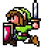
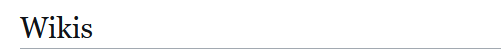
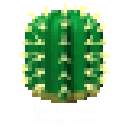
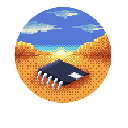

Links to my stuff

My community servers.
These are all linked together, so you don't need to worry about missing out on something.
Places I post to sometimes.

I occasionally contribute to some wikis.
You can see those contributions here.


A game that got nearly its entire development released. Let's research it!